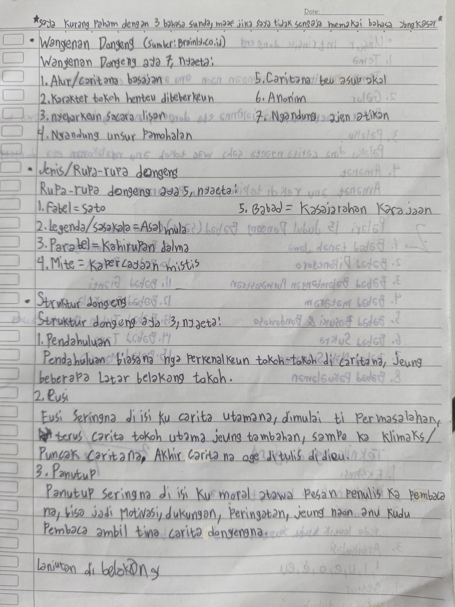
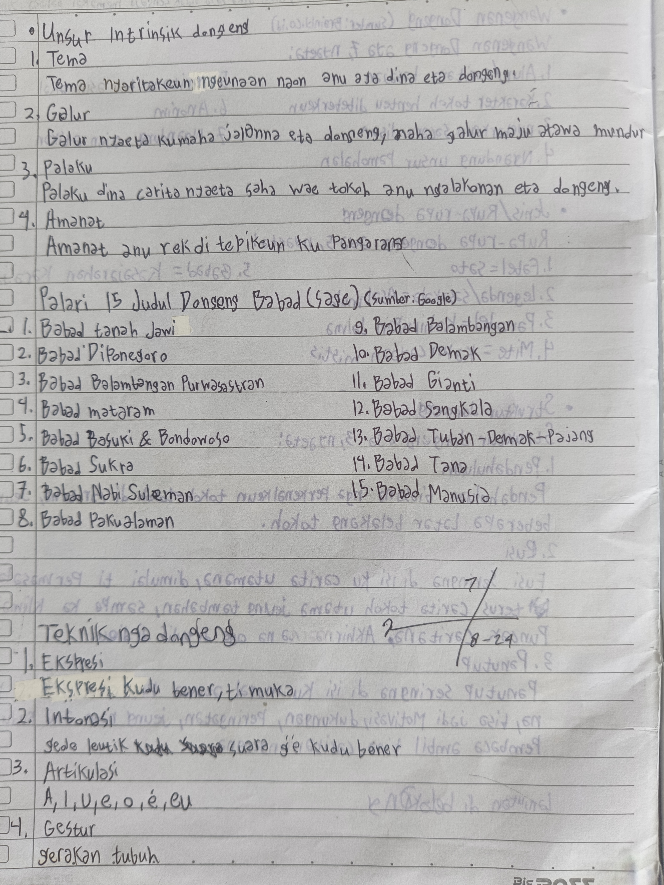

Halaman 1, Buku catatan Sunda Badi

Halaman 2, Buku catatan Sunda Badi
Tulisan di luhur kertas aya "Saya kurang paham dengan 3 Bahasa Sunda, maaf jika saya tidak sengaja memakai bahasa yang kasar." anu mangrupa klarifikasi Badi ka guruna bisi Badi teu kahaja nulis basa kasar dina buku. Ku sabab Badi kirang ngarti kana tilu tingkatan basa Sunda (lemah, sarua umur, kasar).
• WANGENAN DONGÉNG.
Wangenan Dongéng aya 7, nyaéta...
- Alur/Caritana Basajan
- Karakter tokoh henteu dibébérkeun
- Disebarkeun sacara lisan
- Ngandung unsur Pamohalan
- Caritana teu asup akal
- Panyiptana Anonim
- Ngandung ajen atikan
• JENIS/RUPA-RUPA DONGÉNG.
Rupa-rupa Dongéng aya 5, nyaéta...
- Fabel = Sasatoan
- Legenda/Sasakala = Asal mula ...
- Parabel = Kahirupan Jalma
- Mite = Kapercayaan Mistis
- Babad = Kasajarahan Kerajaan
• STRUKTUR DONGÉNG
Struktur Dongéng aya 3, nyaéta...
1. Pendahuluan
Pendahuluan biasana ngaperkenalkeun tokoh-tokoh di caritana, jeung sababaraha Latar Belakang si tokohna éta.
2. Eusi
Eusi sering na di isi ku carita utamana, dimulai ti Permasalahan, terus carita tokoh utama jeung tambahan, sampé ka klimaks/Puncak carita. Akhir carita na ogé tiasa di tulis di dieu.
3. Panutup
Panutup mindeng di isi ku moral atawa pesan penulis ka pambaca na, bisa jadi motivasi, dukungan, peringatan, jeung naon anu kudu pembaca ambil tina carita Dongéngna.
• UNSUR INSTRINSIK DONGÉNG
1. Téma
Téma nyaritakeun ngeunaan naon anu aya dina éta dongéng.
2. Galur
Galur nyaéta kumaha jalanna éta dongéng. Aya galur maju, mundur, jeung campuran.
3. Palaku
Palaku dina carita nyaéta saha wae tokoh anu ngalakonan éta dongéng.
4. Amanat
Amanat nyaéta hal anu rék ditepikeun ku pangarang.
• Palari 15 Judul Dongéng Babad(Sage)
- Babad Tanah Jawi
- Babad Diponegoro
- Babab Balambangan Purwasastran
- Babab Mataram
- Babad Basuki & Bondowoso
- Babab Sukra
- Babab Nabi Sulaéman
- Babab Pakualaman
- Babab Balambangan
- Babab Demak
- Babab Gianti
- Babab Sasangkala
- Babab Tuban-Demak-Pajang
- Babab Tana
- Babab Manusia
• Téknik nga Dongéng
1. Éksprési
Éksprési kudu bener, tiasa tina rupa.
2. Intonasi
Gedé leutik suara anjeun gé kudu jelas tur bener.
3. Artikulasi
Bacaan Vokal siga A, I, U, E, O, É, EU kudu jelas tur bener.
4. Géstur
Gerakan awak bisa nétélakeun jeung nguatkeun presentasi anjeun.